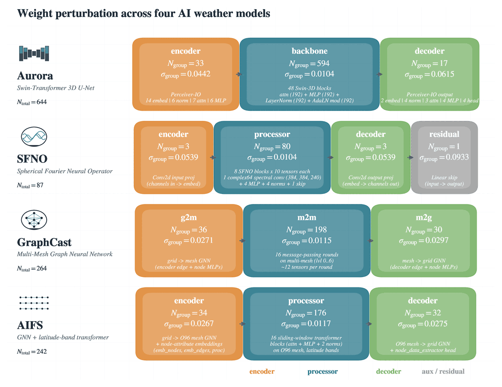

One group at a time (encoder / processor / decoder), at the variance-budget magnitude σgroup = σfull √(Ntotal/Ngroup), so both phases spend the same weight-noise budget.
PHASE 3
Coarse scales only
The synoptic-and-larger stage of each backbone: Aurora's U-Net bottleneck, GraphCast's 42 coarsest mesh nodes, SFNO's lowest ten spherical-harmonic modes (λ ≳ 3300-5000 km).
Selection rule: CRPSS at 240 h, where the deterministic prior has washed out and the perturbation is doing the work. Rivals within the ±0.02 grid scatter must win the full metric bundle. None did.

Phase 1 and 2: tensor groups and their variance-budget magnitudes, per architecture.